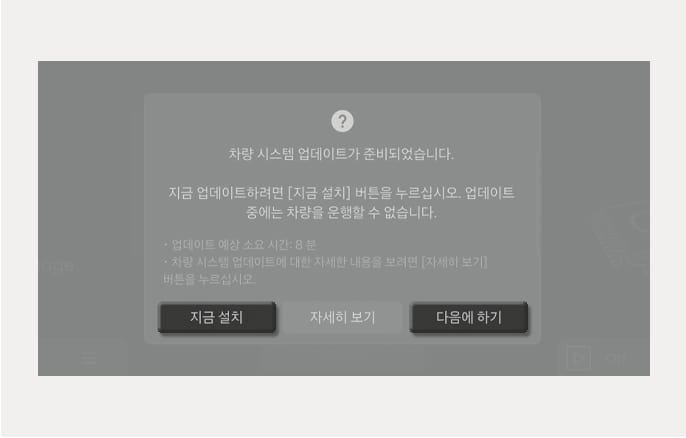
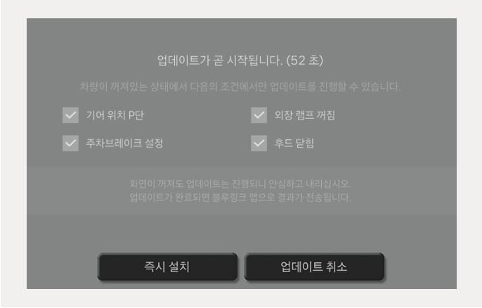
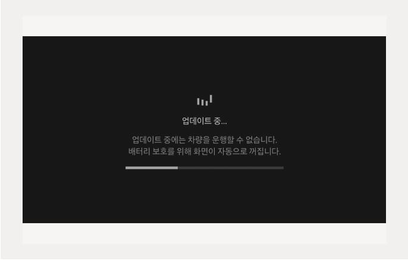
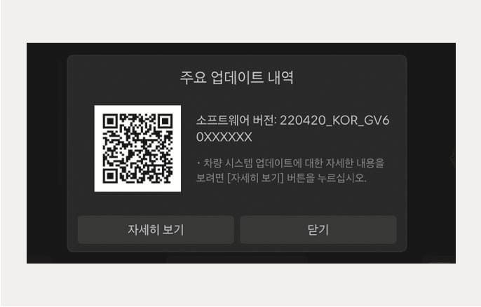

소프트웨어 업데이트 승인

2C_OTACirmformInfo
시동을 끄면 업데이트 시작을 승인할 수 있습니다.
-
업데이트를 시작하려면 지금 설치를 누르십시오.
-
업데이트를 연기하려면 다음에 하기를 누르십시오.
소프트웨어 업데이트 승인 화면에서 시작을 누르면 차량은 업데이트를 준비합니다.
다음 조건을 모두 만족한 경우에만 업데이트를 시작할 수 있습니다.
-
시동 'OFF' 상태
-
기어 'P'(주차) 위치
-
전자식 파킹 브레이크(EPB) 체결
-
외장 램프 꺼짐
-
후드 닫힘
-
차량의 배터리 잔량이 충분함
-
업데이트 대상 제어기의 필수 기능 미작동

2C_OTACirmformProcessing
-
업데이트를 바로 시작하려면 즉시 설치를 누르십시오.
-
업데이트를 취소하려면 업데이트 취소를 누르십시오.

2C_OTACirmformProcessing_2

2C_OTACirmformProcessing_3
차량 내 인포테인먼트 화면에서 업데이트 진행률을 확인할 수 있습니다.
업데이트 결과는 차량 내 인포테인먼트 화면이나 휴대폰 알림을 통해 확인할 수 있습니다.
화면은 배터리 보호를 위해 꺼집니다. 꺼진 화면을 다시 켜서 진행률을 확인하려면 시동 버튼을 누르십시오.
-
업데이트가 시작되면 자동으로 완료되고 시스템이 꺼지므로 차량에서 내려도 됩니다.
-
무선 소프트웨어 업데이트 기능은 블루링크에 가입한 경우에만 사용할 수 있습니다.
-
차량에 설치된 소프트웨어 버전에 따라서 차량별로 업데이트 항목이 다를 수 있습니다.
-
홈페이지의 공지사항을 확인한 후 최신 버전의 소프트웨어로 업데이트하십시오.
-
업데이트가 실패하면 자동으로 복구를 시도합니다. 복구 완료 후 업데이트를 다시 진행하려면 현대 고객센터로 연락해 문제를 해결하십시오.
-
소프트웨어 업데이트 또는 복구가 실패할 경우 현대 고객센터로 문의하십시오. 안전과 관련된 문제일 경우 현대 고객센터의 안내를 통해 긴급 출동 등의 서비스가 제공될 수 있습니다.
-
소프트웨어 업데이트 후에는 업데이트된 기능의 작동 사양이 변경될 수 있습니다. 자세한 내용은 현대 홈페이지의 '무선 업데이트' 페이지 또는 고객센터 > 다운로드 센터에서 취급설명서를 참고하십시오.
-
당사 직영 하이테크센터나 블루핸즈에서 기능 향상이나 추가를 위한 무선 업데이트 방법 외 유선 소프트웨어 업데이트를 진행할 경우, 추가 비용이 발생할 수 있습니다.
-
소프트웨어 업데이트가 진행되면 다음의 제약이 발생합니다.
-
시동을 걸고 주행할 수 없습니다. 업데이트를 위한 충분한 시간을 확보하고, 안전한 장소에 주차한 후에 업데이트를 진행하십시오.
-
원격 시동을 포함한 원격 서비스를 사용할 수 없습니다.
-
차량을 충전할 수 없습니다. 업데이트 완료 후 충전하십시오.
-
주차 영상이 녹화되지 않습니다.(빌트인 캠 적용 차량)
-
후석 승객 알림 기능이 작동하지 않을 수 있습니다. 업데이트 시작 후 차량에서 내릴 때 뒷좌석을 반드시 확인하십시오.(해당 기능 적용 차량)
-
업데이트 내역에 디지털 키 기능이 포함되면 디지털 키를 통한 도어 잠금/잠금 해제 기능이 작동하지 않을 수 있습니다. 공지를 확인해 디지털 키 기능이 업데이트되는 경우에는 도어를 잠그거나 잠금 해제할 때 스마트 키의 버튼을 사용하십시오.
-
-
소프트웨어 업데이트 시작 전에 시동을 켜는 등 차량의 상태를 변경하면 업데이트가 자동으로 취소됩니다.
-
소프트웨어 업데이트가 시작되면 업데이트를 취소할 수 없습니다.
-
소프트웨어 업데이트 중에 12 V 배터리 충전을 위한 고전압 관련 모듈이 작동할 수 있으니 주의하십시오.
-
제어기나 소프트웨어를 임의로 교체하지 마십시오. 무선 업데이트 기능을 사용할 수 없습니다.
-
소프트웨어 업데이트 중에 후드를 열거나 배터리를 분리하지 마십시오. 업데이트가 실패할 수 있습니다.
-
차량 OBD 단자에 별도 제품을 연결하면 업데이트 기능이 동작하지 않습니다. 해당 기능은 OBD 단자에 연결된 제품을 제거하고, 차량을 재시동하면 작동 가능합니다.
-
소프트웨어 업데이트가 정상적으로 완료되지 않으면 현대 고객센터로 연락하십시오.